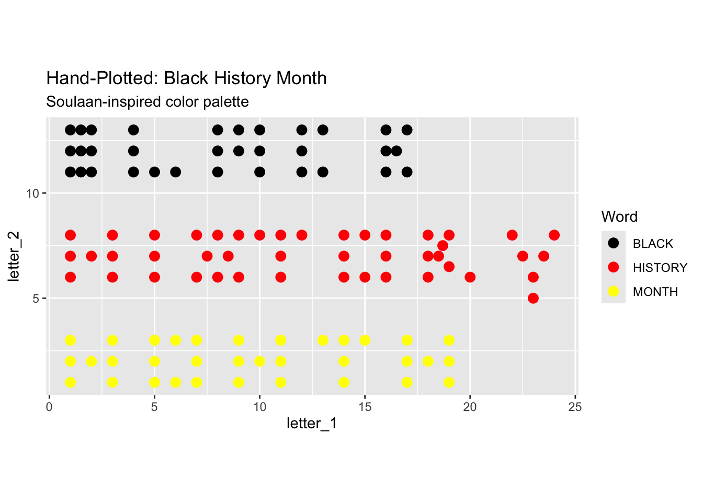

The projects should be numbered consecutively (i.e., in the order in which you began them), and should include for each project a description of the goal, the product (computer program, hand graph, computer graph, etc.), the data, and some interpretation. Reports must be reproducible and of high quality in terms of writing, grammar, presentation, etc.
33, 45, 34
library(ggplot2)# 1. Create the data frame with your coordinates
black_historyp <- data.frame(
letter_1 = c(1,1,1,2,2,2, 1.5, 1.5, 1.5, 4, 4, 4, 5, 6, 8, 8, 8, 9, 10, 10, 10, 12, 12, 12, 13,13, 9, 16, 16.5, 16, 16, 17, 17, 1, 1, 1, 2, 3, 3, 3, 5, 5, 5, 7, 7, 7.5, 8, 8, 8.5, 9, 9, 10, 11, 12, 11, 11, 14, 14, 14, 15, 16, 16, 16, 15, 18, 18, 18, 18.5, 19, 18.7, 19, 20, 22, 22.5, 24, 23.5, 23, 23, 17, 17, 17, 18, 19, 19, 19, 1, 1, 1, 2, 3, 3, 3, 5, 5, 5, 6, 6, 7, 7, 7, 9, 9, 9, 10, 11, 11, 11, 13, 14, 15, 14, 14),
letter_2 = c(13, 12, 11, 13, 12, 11, 12, 13, 11, 11, 12, 13, 11, 11, 11, 12, 13, 13, 13, 12, 11, 11, 12, 13, 13, 11, 12, 11, 12, 12, 13, 13, 11, 6, 7, 8, 7, 6, 7, 8, 6, 7, 8, 6, 8, 7, 8, 6, 7, 8, 6, 8, 8, 8, 7, 6, 6, 7, 8, 8, 8, 7, 6, 6, 6, 7, 8, 7, 8, 7.5, 6.5, 6, 8, 7, 8, 7, 6, 5, 1, 2, 3, 2, 3, 2, 1, 1, 2, 3, 2, 3, 2, 1, 1, 2, 3, 1, 3, 1, 2, 3, 1, 2, 3, 2, 1, 2, 3, 3, 3, 3, 2, 1)
)# 2. Add the labels based on your counts
black_historyp$Word <- c(
rep("BLACK", 33),
rep("HISTORY", 45),
rep("MONTH", 34)
)# 2. Plot it with separate colors and groups
ggplot(black_historyp, aes(x = letter_1, y = letter_2, color = Word)) +
geom_point(size = 3) +
scale_color_manual(values = c(
"BLACK" = "black",
"HISTORY" = "red",
"MONTH" = "yellow"
)) +
coord_fixed() +
labs(title = "Hand-Plotted: Black History Month",
subtitle = "Soulaan-inspired color palette")